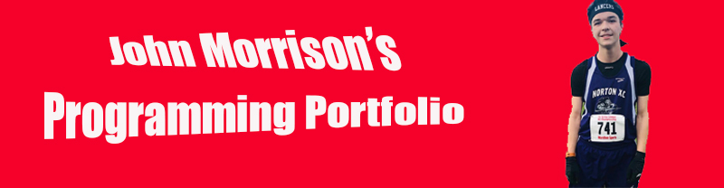

Welcome to John's Programming Portfolio
Hi all, and welcome to my computer science page! As for a bit about me, I'm a computer sciecne major here at URI going for my Bachelor's of Science degree.
I have always had a passion for technology since I was a kid and am thrilled to be exploring this field more deeply. I'm a service member at RamTech, so I'm always eager
to solve some tech problems that come my way. I ran cross country and track all 4 years of high school and love to get out for a scenic run. I also do some PC gaming in my
free time, and I always love to talk to friends. I'm eager to see where computer science takes me in my college career!